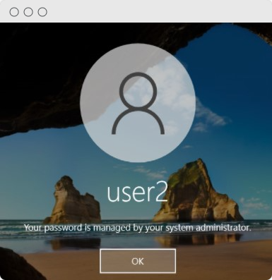

Tenemos varias maneras desde el
CMD
o a través de las políticas locales del sistema.
Creamos un usuario de pruebas con una clave
"user2"
, en local.
Iremos a comprobar que no podemos
"restablecer contraseña"
, con
"user2"
.

Y ahora haremos lo mismo pero desde las políticas locales del sistema.
Se nos abre la ventana de
políticas locales del sistema
. Y nos vamos a: